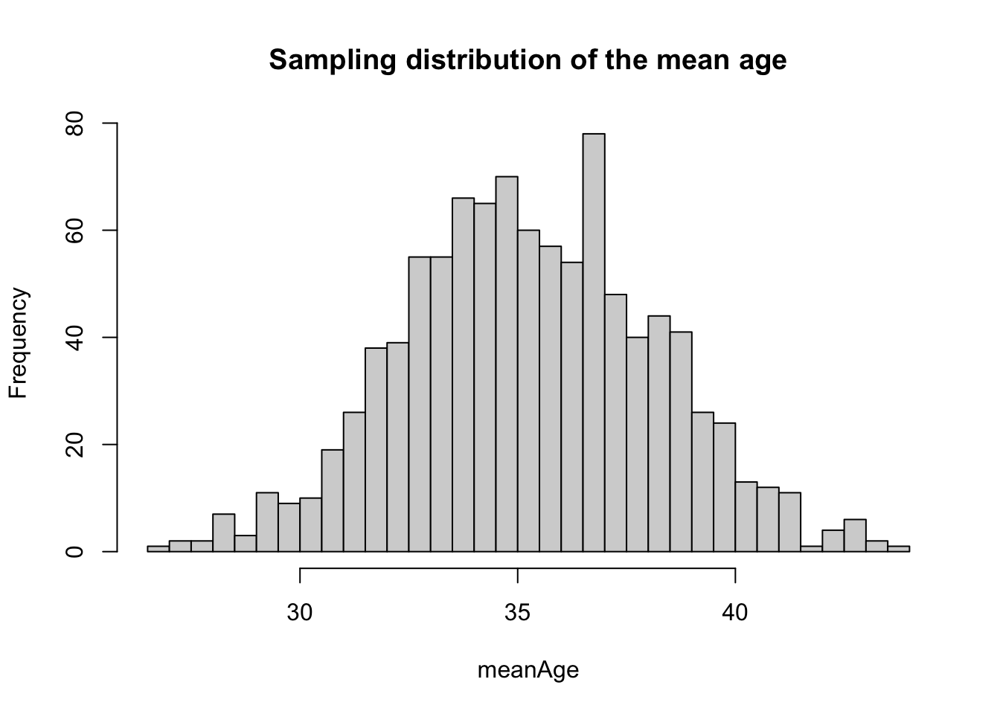
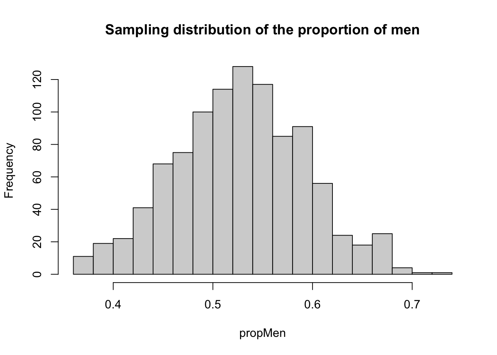
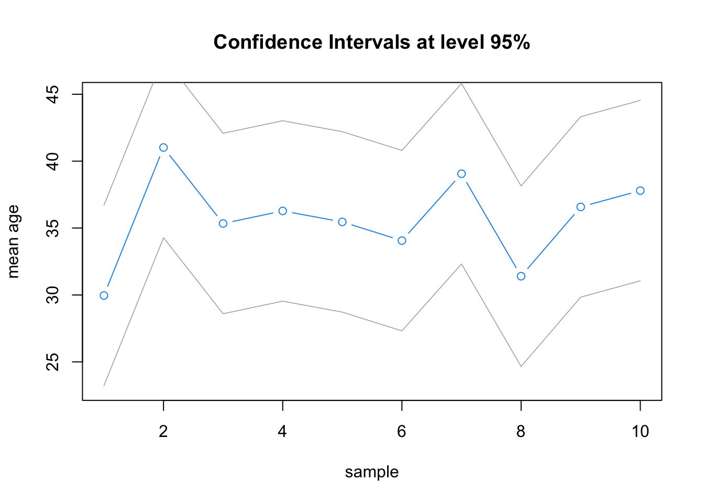

census <- read.table("data/US/UScensus2000.txt",
header = T, sep = "\t")
nrow(census)
#> [1] 500
summary(census)
#> censusYear stateFIPScode totalFamilyIncome age
#> Min. :2000 Length:500 Min. : 0 Min. : 0.0
#> 1st Qu.:2000 Class :character 1st Qu.: 21500 1st Qu.:17.0
#> Median :2000 Mode :character Median : 43000 Median :35.0
#> Mean :2000 Mean : 57411 Mean :35.3
#> 3rd Qu.:2000 3rd Qu.: 70700 3rd Qu.:51.0
#> Max. :2000 Max. :892050 Max. :93.0
#> NA's :15
#> sex raceGeneral maritalStatus totalPersonalIncome
#> Length:500 Length:500 Length:500 Min. : -4400
#> Class :character Class :character Class :character 1st Qu.: 5900
#> Mode :character Mode :character Mode :character Median : 17750
#> Mean : 29082
#> 3rd Qu.: 37000
#> Max. :456000
#> NA's :10819 Statistical Inference
In this chapter, we first introduce point estimates and then confidence interval estimations
We will use a census extract of the US population as the main dataset, UScensus2000.txt (see data/US folder)
19.1 Point Estimates
19.1.1 Point Estimate
In order to estimate the population mean \(\bar{X}\) (or variance, median or any other metric) based on a sample, we use to take the sample mean: \[\bar{x} = \dfrac{1}{n} \sum_{i=1}^n x_i\]
\(\bar{x}\) is called a point estimate or punctual estimation of the population mean.
19.1.2 Problem
If we take another sample from that same population and compute the new sample mean, we are likely to obtain a different point estimate. This difference is called sampling variation.
In other words, an estimate is close to the real value, without being exactly equal to the real (population) parameter value. Also, the sampling variation is supposed to decrease with the size of the sample. A point estimate tends to the population parameter value as the sample size increases and gets closer to the entire population size.
19.1.3 Illustration
We suppose that the dataset \(census\) contains our target population. Our aim is to estimate the population mean for the variable \(age\) and the proportion of the different genders in the case of variable \(sex\).
We look at the running mean of the variable \(age\) and at the running proportion of men for the variable \(sex\).
We start by extracting from the total population a sample made of one observation: \(n = 1\). At each step, we extract randomly a new sample with one additional observation. We use a sampling with replacement, i.e. the previous sample is not simply augmented: we take a new sample (made of completely new individuals) each time. We stop when we reach the total population, i.e. when \(n = 500\) in our case.
The key function for sampling in R is sample(), which randomly selects a number (arg size) of records for a given vector or data frame (or, if none are specified, outputs a vector of \(1\) to \(size\) integers in a random order).
Note also that we introduce here a first “for loop” to iterate from 1 to \(N\) (our total population)
N <- nrow(census) #500
mu_age <- mean(census$age)
mu_men <- mean(census$sex == 'Male')
rMeanAge = NULL
rPropMale = NULL
set.seed(201292)
for (i in 1:N) {
sample <- census[sample(N, i), ]
rMeanAge[i] <- mean(sample$age)
rPropMale[i] <- mean(sample$sex == "Male")
}
rm(sample) #we don't keep the last sample either
plot(rMeanAge, type = 'l', col = 2,
xlab = 'Sample size', ylab = 'age',
main = 'Running mean')
abline(h = mu_age, col = 'darkgray')
text(500, age + 1.5, age, col = 'darkgray')
#> Error in eval(expr, envir, enclos): object 'age' not found
plot(rPropMale, type = 'l', col = 4,
xlab = 'Sample size', ylab = 'men',
main = 'Running proportion')
abline(h = mu_men, col = 'darkgray')
text(500, men + .05, men, col = 'darkgray')
#> Error in eval(expr, envir, enclos): object 'men' not found19.1.4 Standard Error
To quantify the uncertainty of a point estimate, we use its standard error. The standard error of an estimate is the standard deviation of its sampling distribution. For the sample mean, it is expressed as follows:
\[SE_{\bar{x}} = \dfrac{s}{\sqrt{n}}\] \(s\) is used here because we usually don’t know the standard deviation of the population (\(\sigma_X\)).
The denominator, \(\sqrt{n}\) reflects how the variability of the sample mean decreases as the sample size increases. This is because the standard error measures the spread of the sample means around the population mean, not just the spread of individual data points within a single sample.
n <- 50
sample_age <- sample(census$age, n)
SEage <- sd(sample_age) / sqrt(n)
SEage
#> [1] 3.440362
sample_sex <- sample(census$sex, n)
SEmen <- sd(sample_sex == 'Male') / sqrt(n)
SEmen
#> [1] 0.0709124219.1.5 Sampling Distribution
Let’s now build the sampling distribution of the sampling mean. We generate \(K = 1000\) samples of size \(n = 50\).
From a sampling distribution we can compute the same basic metrics as from any other distribution, with some differences. In our case, the distribution is symmetric and centred around the real value \(\mu = 35.298\) (see mu_mean above).
K <- 1000
meanAge = NULL
propMen = NULL
set.seed(201292)
for (i in 1:K) {
sample <- census[sample(N, n), ]
meanAge[i] <- mean(sample$age)
propMen[i] <- mean(sample$sex == 'Male')
}
rm(sample)
hist(meanAge, breaks = 25,
main = 'Sampling distribution of the mean age')
abline(v = age, col = 2)
#> Error in eval(expr, envir, enclos): object 'age' not found
text(38.5, 100, age, col = 2)
#> Error in eval(expr, envir, enclos): object 'age' not found
hist(propMen, breaks = 20,
main = 'Sampling distribution of the proportion of men')
abline(v = men, col = 2)
#> Error in eval(expr, envir, enclos): object 'men' not found
text(men + .1, 100, men, col = 2)
#> Error in eval(expr, envir, enclos): object 'men' not foundExample:
We have a sample of 100 trees with measures of their diameter at breast height. We are interested in the mean value and standard error. The point estimate equals 164 with a empirical variance of 333221.
What is the standard error of the sample mean?
n <- 100
variance <- 333221
# compute sample standard deviation
s <- sqrt(variance)
s
#> [1] 577.253
# compute standard error of the sample mean
SE_mean <- s / sqrt(n)
SE_mean
#> [1] 57.7253What is the standard error if the sample was made of 1000 trees?
SE_mean <- s / sqrt(1000)
SE_mean
#> [1] 18.2543419.1.6 Confidence Interval Estimation
Due to the error in point estimates, it is often more relevant to look at intervals instead. The range of values of estimates for a given parameter is called a confidence interval (CI). To build a confidence interval we need three elements:
- a point estimate \(\hat{\theta}\) for the parameter of interest \(\theta\)
- the standard error associated \(SE_{\hat{\theta}}\)
- a confidence level \(1 - \alpha\)
We know the first two elements. A confidence interval use the information of uncertainty of the point estimate in order to define the range of values such that we are certain at a level \(1 - \alpha\) to capture the real (population) parameter value. We call \(1 - \alpha\) the confidence level. For \(\alpha = 5\% = (0.05)\), we say that “we are confident at level 95% that the interval will capture the population parameter”
In other words, if we generate 100 samples, and compute their confidence interval, in 95 cases, the interval will contain the parameter value.
When a point estimate \(\hat{\theta}\) follows a normal distribution, its confidence interval is defined by: \[[\hat{\theta} \pm z_\alpha SE]\]
With \(z_\alpha SE\) the margin of error.
Under a normal distribution:
- \(z_{0.1} = 1.645\): 90% in the interval
- \(z_{0.05} = 1.96\): 95% in the interval
- \(z_{0.001} = 2.58\): 99% in the interval
In the case of the age variable of the census data, the intervals for each of our \(K\) samples are
CI95 <- data.frame(low = meanAge - 1.96 * SEage,
point = meanAge,
high = meanAge + 1.96 * SEage)
CI95[1:10, ]
#> low point high
#> 1 23.21689 29.96 36.70311
#> 2 34.27689 41.02 47.76311
#> 3 28.59689 35.34 42.08311
#> 4 29.53689 36.28 43.02311
#> 5 28.71689 35.46 42.20311
#> 6 27.31689 34.06 40.80311
#> 7 32.31689 39.06 45.80311
#> 8 24.65689 31.40 38.14311
#> 9 29.83689 36.58 43.32311
#> 10 31.05689 37.80 44.54311plot(CI95[1:10, 'low'], col = 'darkgray', lwd = .75,
type = 'l', ylim = c(23,45),
xlab = 'sample', ylab = 'mean age',
main = 'Confidence Intervals at level 95%')
lines(CI95[1:10, 'point'], col = 4, type = 'b')
lines(CI95[1:10, 'high'], col = 'darkgray', lwd = .75)
abline(h = age, col = 2, lwd = 2)
#> Error in eval(expr, envir, enclos): object 'age' not foundWhile for most cases, the interval is within the 95% confidence around \(\mu = 35.298\), the mean from samples 2 and 7 are a little too high.